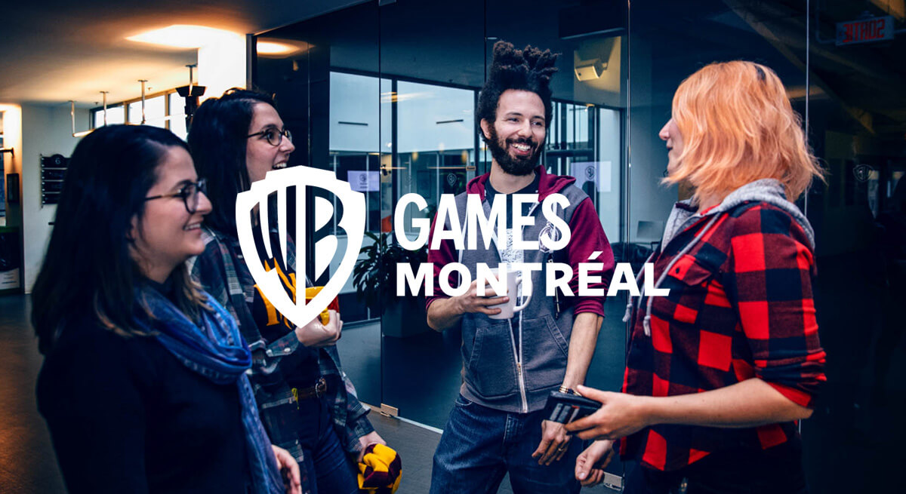

Map the real flow
Map Maya, MotionBuilder, Unreal 5, source control, build agents, and asset handoffs with IT and animation leads.
We saw the Advanced Animator opening. That role points to more real-time animation, Unreal 5 work, motion capture, and engine integration. Here is how we would support the IT Ops path behind it.

The signal says WB Montreal is scaling senior animation work. That means more motion capture data, larger assets, and more Unreal 5 handoffs. The bottleneck is rarely one artist. It is the path from tool, to engine, to build, to QA. If that path slows down, senior hires spend time waiting instead of shipping.
Use a dedicated squad under your IT Ops or production owner for a six-week pilot, with a weekly demo and clear handover.
Map Maya, MotionBuilder, Unreal 5, source control, build agents, and asset handoffs with IT and animation leads.
Stabilize asset checks, build queue signals, and access rules so new animators can work without avoidable support delays.
Add smoke tests for animation tools, import paths, and internal web panels before issues reach late QA.
Document the playbook, train owners, and leave simple alerts for build health and pipeline drift.

Elinext built a media testing tool that reduced manual checks and made game behavior easier to validate.
Read case study
Elinext delivered a 3D game with Maya, 3D Max, animation support, and a short delivery path.
Read case study